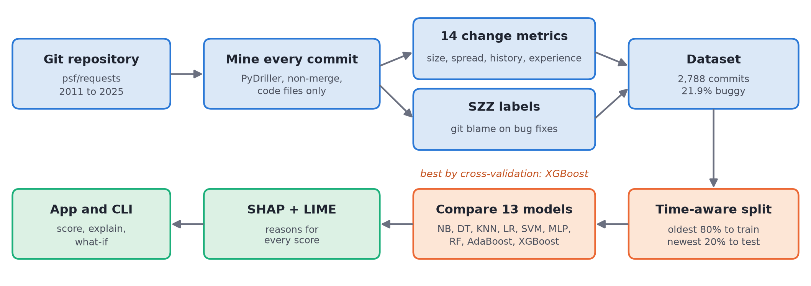
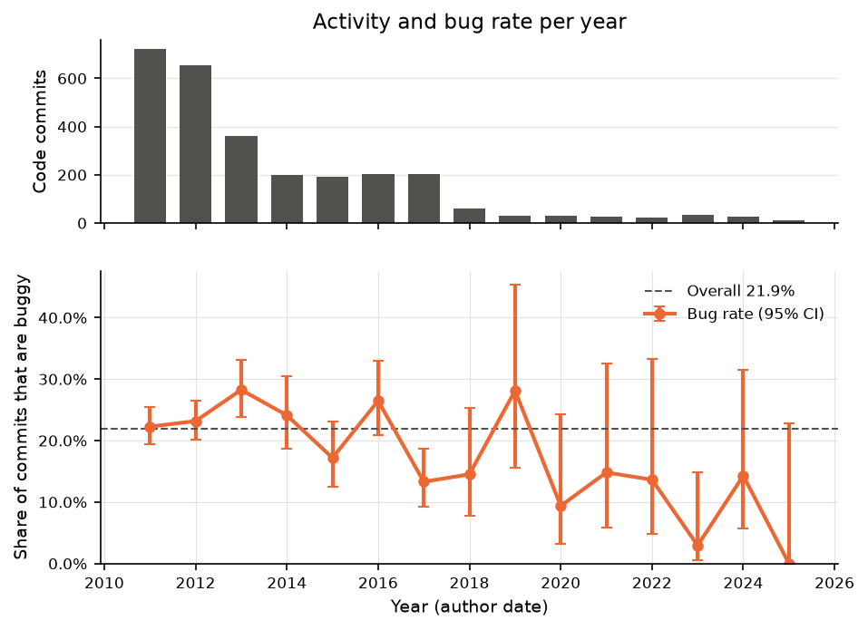
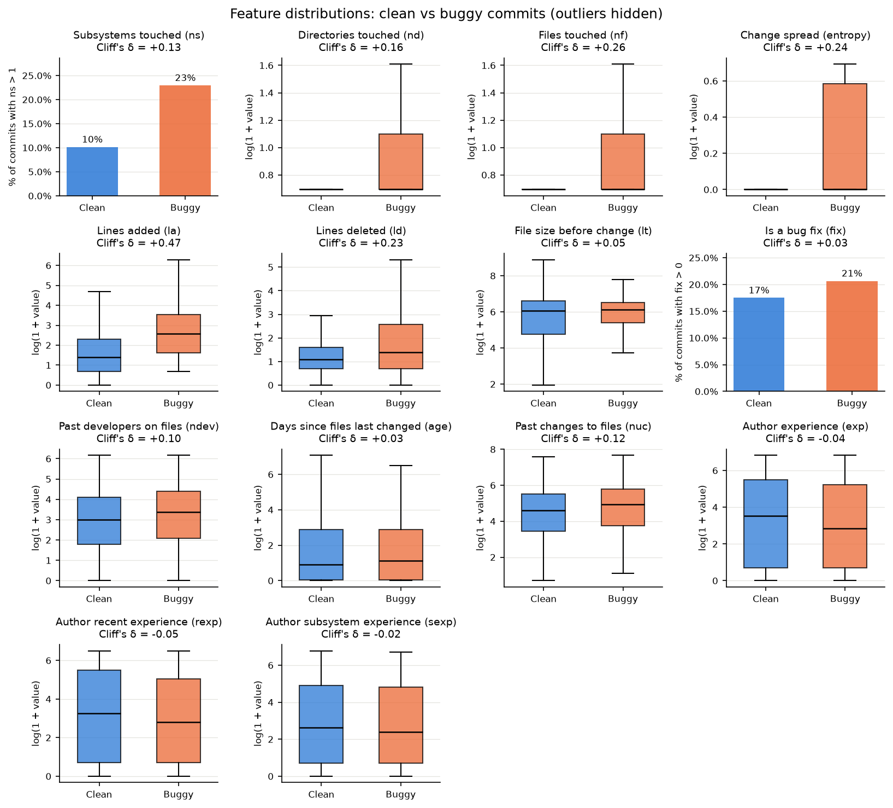
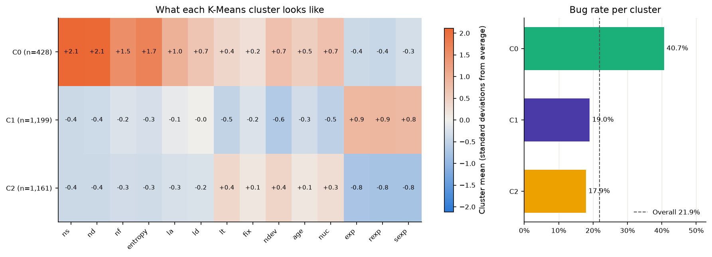
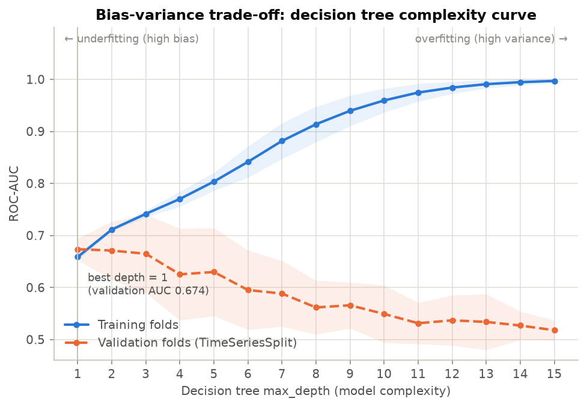
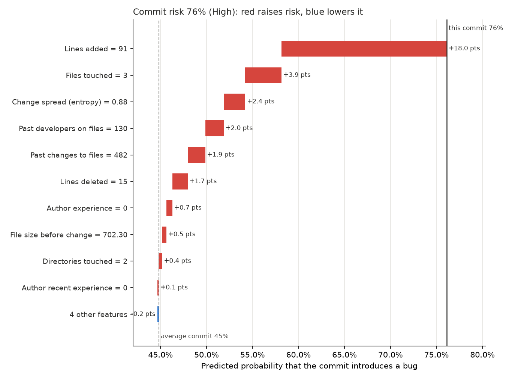
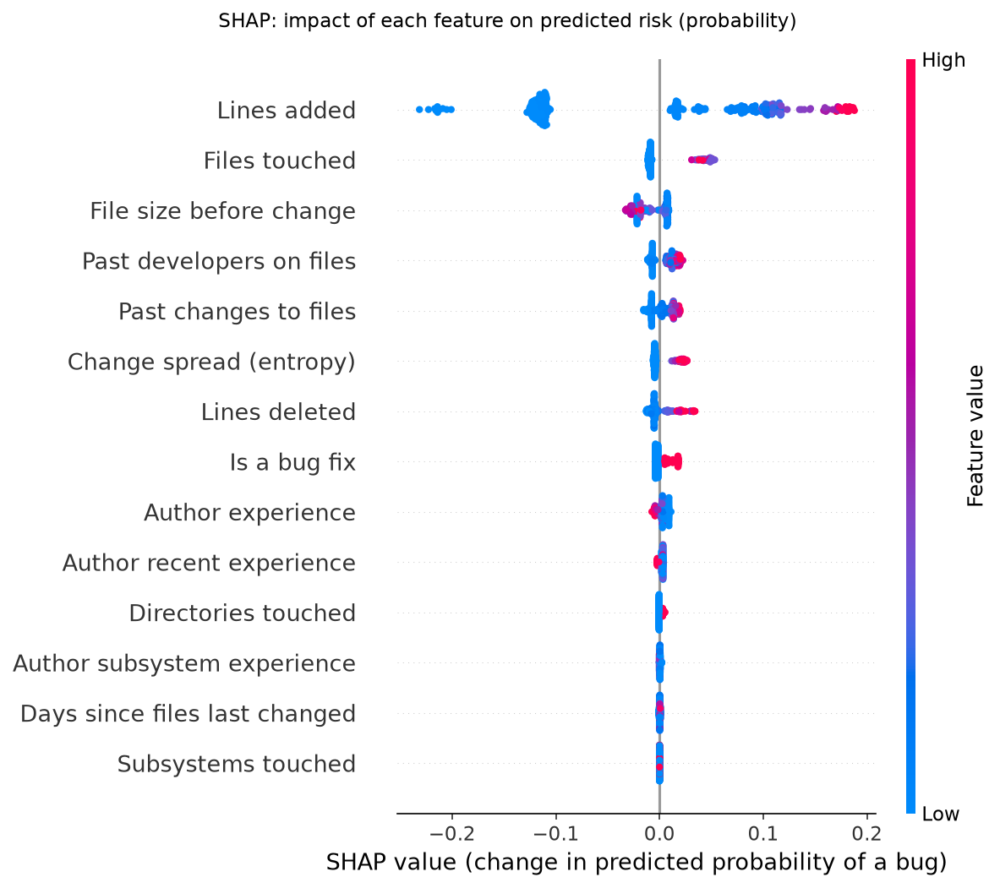
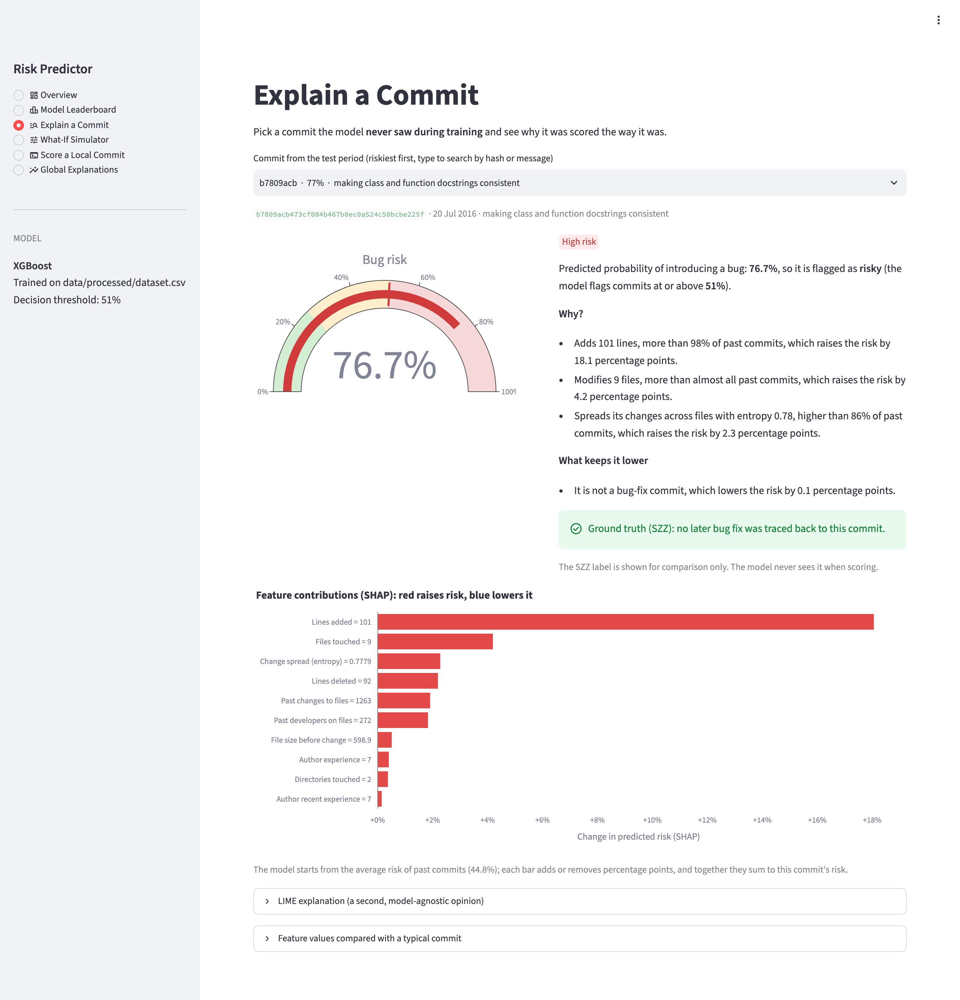
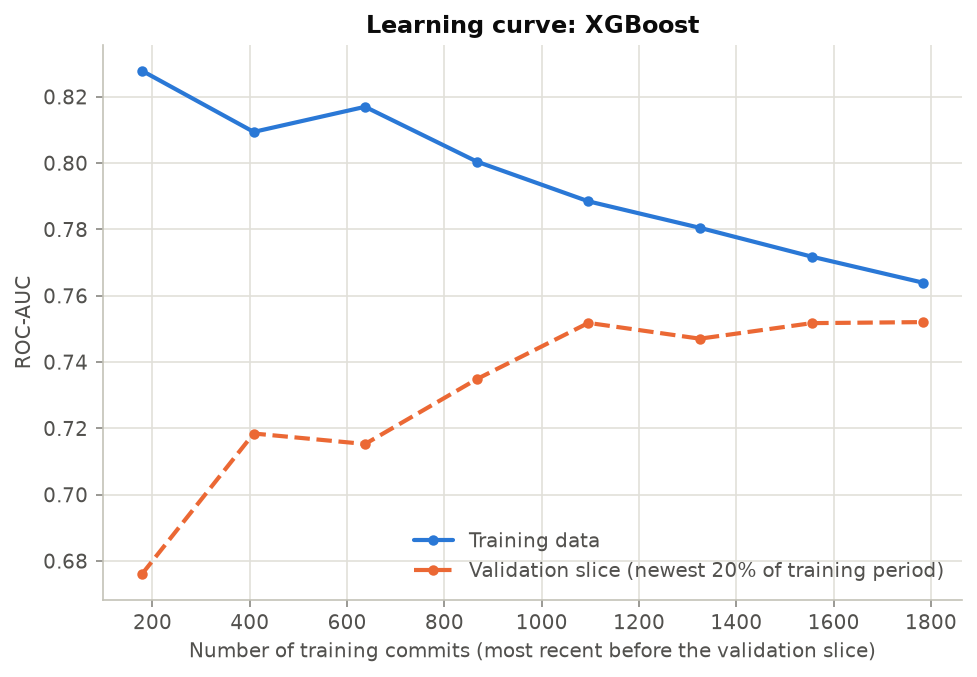

Spotting the commits most likely to introduce a bug, and saying why.
In most teams a one-line typo fix and a 600-line refactor get roughly the same attention in code review.
Bugs slip through in the big, scattered changes, and by the time they show up weeks later they cost far more to fix.
Our goal: a model that ranks commits by risk the moment they are made, and gives reasons a developer can act on.
1 file · 0 lines added · 1 deleted
9 files · 101 lines added · 92 deleted
Two real commits from the test period. Which one would you review first?

Everything runs from one Python package. Each step is a single command and is covered by tests.

Why requests? It is one of the most used Python libraries, with a long and public history of bugs and fixes.
What we kept: non-merge commits that touch code. We dropped the last 180 days because their bugs mostly haven't been found yet.
Worth noticing: most activity was in the early years, and the bug rate drifts over time. That is why we split the data by date.
How spread out is the change?
ns, nd, nf,
entropy
How big is it?
la, ld, lt
Is it fixing a bug?
fix
How busy are the files it touches?
ndev, age, nuc
How experienced is the author?
exp, rexp, sexp
History and experience are computed only from earlier commits. We walk the history from oldest to newest, so the model can never peek into the future.
Commit messages that say fix, bug or defect. We found 518.
Run git blame on every line each fix changed.
The commit that last touched those lines is labelled buggy. That gave 613 commits.
Keywords miss some fixes. Fixes that only add lines can't be traced. A commit that only moved buggy code can get the blame. And very recent commits look clean because nobody has found their bugs yet.

8 of 14 features differ significantly (Mann-Whitney U test, p < 0.05). Size and spread matter most.
Author experience and the fix flag barely differ on their own.
Every distribution overlaps a lot, so no single feature is enough. We need a model that combines them.

Several subsystems and files. 40.7% buggy
Small changes by regulars. 19.0% buggy
Small changes by new authors. 17.9% buggy
K-Means never saw the labels. DBSCAN agreed: the unusual commits it marked as noise were buggy 41% of the time.
The top seven are within one standard deviation of each other. With 14 features and noisy labels, the data sets the ceiling.
XGBoost, random forest and AdaBoost all sit near the top. Single trees overfit.
Recall of logistic regression at the default 0.5 threshold:
| Handling | CV ROC-AUC | Recall at 0.5 |
|---|---|---|
| None | 0.721 | 0.31 |
| Class weights | 0.721 | 0.74 |
| SMOTE | 0.719 | 0.74 |
Rebalancing barely changes the ranking, but without it the model misses about 70% of buggy commits. Either rebalance or tune the threshold.

A depth-15 tree scores 0.997 on its training folds but only 0.518 on validation. That is variance. Ensembles fix it.
A reviewer who checks only one commit in five finds about half the bugs. That is 2.4 times better than picking at random.
It flags 44% of commits at this threshold. A team would tune it to their review budget.

SHAP splits one prediction into a sum. The average risk (44.8%) plus one contribution per feature adds up exactly to this commit's risk (76.1%).
"Adds 91 lines, more than 96% of past commits, which raises the risk by 18.0 percentage points."
We compare each value with past commits so the sentence means something to a developer.
LIME, our second method, agreed on 60% of the top three features.

"Modifies 3 files, which lowers the risk."
Files touched and entropy have a correlation of 0.97, so the model gave them large weights with opposite signs that cancel out.
"Modifies 3 files, more than 94% of past commits, which raises the risk."
Shallow trees with column sampling don't learn these reversals.
The scores are almost the same, but only one model gave explanations a reviewer would trust. Checking that explanations make sense is part of evaluating a model.

Built with Streamlit. The same scoring also works from the command line.

The learning curve flattens after about 1,100 commits, so more data from the same project won't help much. Better features or cleaner labels will.
Questions are welcome.